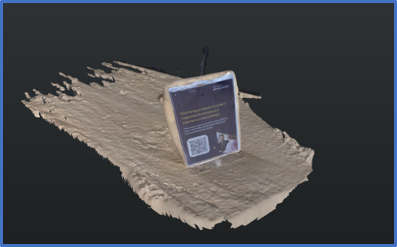
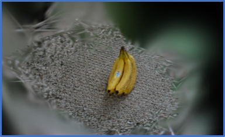
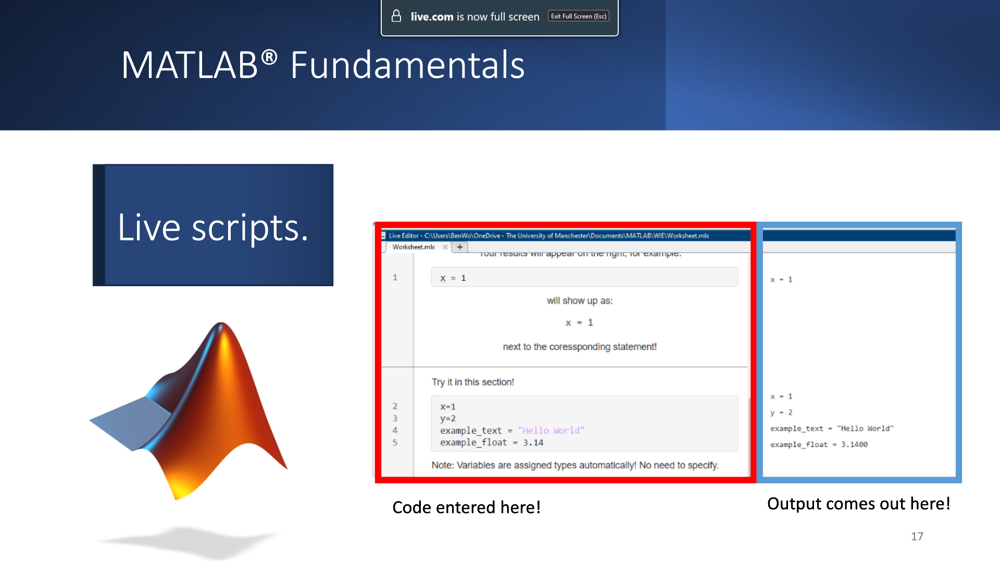
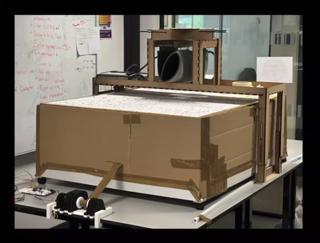

My name is Benjamin Woodruff, I'm a Mechatronics graduate currently studying the University of Manchester's MSc in robotics course. I'm part of RAINZ CDT as one of their first cohorts, and will be hopefully performing my responsibilities as a postgraduate researcher this coming year.
I chose research, and academia as a whole, because I enjoy the engineering process. I'm passionate about solving the big problems our society faces and using my skills to hopefully help people worldwide is my dream.
Research also allows me to teach others the same things I find interesting, while also being at the forefront of human knowledge and understanding and learning myself
My current interests pertain to my research at the University of Manchester, namely sustainability, and how robotics and AI can help us achieve net zero carbon. To this end, I'm currently researching automation within energy, and how robots might be used to help promote clean and reliable transfer and generation of power. This includes computer vision and path planning, which I'm currently researching.
The Robotics System Design Project, or RSDP, is a current project I'm working on. It will use a Leo Rover to collect and sort coloured blocks into designated bins, This will use a variety of topics, including computer vision, SLAM, kinematics and path finding.

Structure From Motion
A personal project for me. Where I explored the usage of structure from motion using publicly available software online. It was hard to get anything working, since most software uses graphics card acceleration for a lot of the calculations, which I lacked access to. Thankfully I found a version that I could run purely on a CPU, even if it took forever.

Gaussian Splatting
An addition to structure from motion I explored, where based on the data retaining to the images and camera coordinates, the scene can be represented by blobs of colour or Gaussians of different sizes in 3d space. Resulting in being able to see the scene from new angles or reconstruct an entire 3D scene from purely 2D images.
ROS2
I programmed a simple wheeled robot and implemented navigation and obstacle avoidance within ROS2 (Version: Humble). Sending it navigation goals the robot then traversed to while avoiding the items in the way.

MATLAB Workshop for W.E.S. (Women in Engineering Society)
I wanted to try teaching, and last year I was given an opportunity to introduce a small class of people to MATLAB, a program I've a lot of experience. Teaching was hard since I had come with a slide-deck on the first session, only to find out there was no where to present them. But I adapted and made adjustments for the next session. The workshop lasted four weeks and we gave everyone who completed it our own unofficial certificate of completion as a reward.

MEng Project
For my MEng Project: as part of a team, we were tasked to create a device that could detect crevasses in an arctic environment. We were limited in our resources, so we chose to make a model of a crevasse and use that to determine the best method for detecting cavities. I was team lead and was also responsible for the interfacing between devices. I learnt a lot of non-technical soft skills from this project, namely team management, how to deal with expectations and how to communicate
Rotary Double Inverted Pendulum (RDIP)
A more controls based and linear algebra project. This was made using MATLAB, Simulink and an addon called Simscape. I compared the outputs of the simulation to one solved using a set of differential equations that are iteratively repeated. My project in particular looked at the dynamics when only the bottom angular encoder gave readings, which was unsurprisingly much harder than if you had access to all the system angles. If you want to see the Github Repository for this project click here!